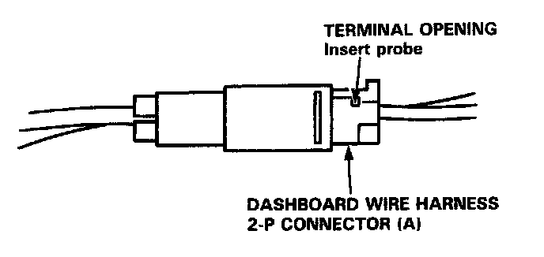
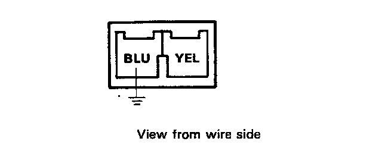
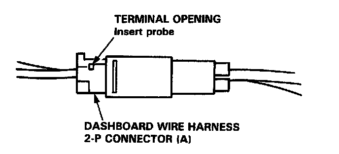
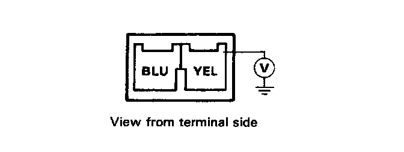
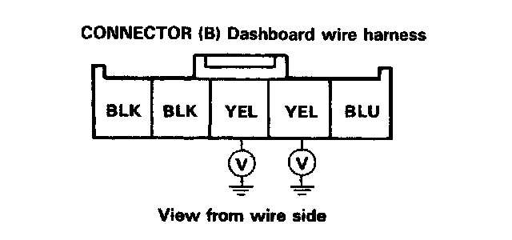
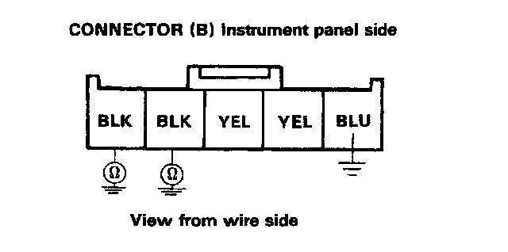

Indicator Does Not Light
The SRS Indicator Does Not Light
CAUTION:
- Remove the positive and negative battery cables, then disconnect the cable reel harness from the airbag and connect the short connector to the airbag harness - refer to "Indicator Light Troubleshooting", caution notice.
- Use only the digital multimeter (KS-AHM-32-003) to check the system.
1. Reconnect the battery cables, then turn the ignition on and check alt warning lights in the combination meter
- If they do light, go to step 2.
- If they do not light, check the No.5 (7.5 A) fuse in the dash fuse box.
2. When the BLU terminal of dashboard wire harness 2-P connector A (in front of the left knee bolster) is grounded, does the SRS indicator light with ignition switch ON?

NOTE: Leave the dashboard wire harness 2-P connector (A) connected.

DASHBOARD WIRE HARNESS and SRS MAIN HARNESS 2-P Connector (A)
- If it does not light, go to step 3.
- If it does light, the SRS unit assembly is faulty.

3. Connect a voltmeter between the YEL terminal (2-P connector A) and body ground. Is battery voltage available at the YEL terminal with the ignition switch ON.

DASHBOARD WIRE HARNESS and SRS MAIN WIRE HARNESS 2-P CONNECTOR (A)
- If battery voltage is available, go to step 4.
- If battery voltage is not available, open the YEL wire of the SRS main wire harness.
4. Remove the combination meter.
Connect a voltmeter between body ground and each of the YEL terminals (separately) of the 5-P connector located on the rear of the meter. Is battery voltage available at each YEL terminal with ignition switch ON?

Connector (B) Dashboard Wire Harness Side^
- If battery voltage is available, go to step 5.
- If battery voltage is not available, open the YEL wire of the dashboard wire harness.
5. Check for continuity between the body ground and BLK terminals (separately) of the 5-P connector located on the rear of the meter.

Connector (B) Instrument Panel Side
- If there should be continuity, SRS indicator is faulty.
- If there should be no continuity, check for;
- open the BLK wires.
- poor ground (G401 or G701).